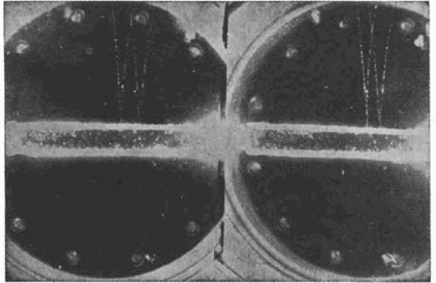
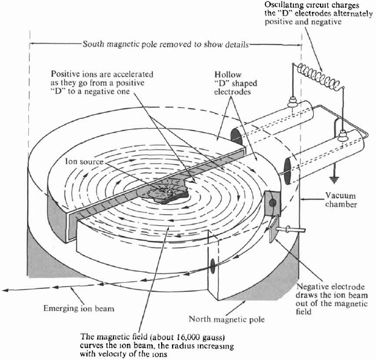

La química moderna: técnicas, logros y fronteras
Introducción
Este capítulo último del libro reúne la doble mirada que ha guiado toda la obra: la de la química como práctica material e histórica y la de la química como ciencia que se define por sus instrumentos y sus fronteras. Los capítulos anteriores recorrieron los conceptos centrales desde la medición hasta el ambiente; aquí se examinan las técnicas que los hicieron posibles, los logros del siglo veinte y las incógnitas que abren el camino hacia el futuro.
La síntesis combina tres voces complementarias: la historia de la disciplina narrada por William Brock, la crónica de las técnicas y de los avances recientes escrita por Peter Atkins y el tratado sobre las partículas fundamentales de Linus Pauling, cuya edición de 1988 conserva intacta la claridad expositiva del original de 1970 (Brock 2015, cap. 6; Atkins 2015, caps. 5 y 7; Pauling 1988, cap. 25).
El laboratorio químico moderno es un lugar híbrido en el que conviven la vasija tradicional con el espectrómetro electrónico; un alquimista reconocería los recipientes, pero no los instrumentos que los acompañan (Atkins 2015, cap. 5). La química comprende dos grandes operaciones: el análisis, que identifica sustancias y determina sus cantidades y concentraciones, y la síntesis, que crea formas deseadas de materia a partir de componentes más simples; las técnicas instrumentales que este capítulo describe pertenecen a ambos dominios {#sec-tecnicas-instrumentales}(Atkins 2015, cap. 5).
La exposición avanza desde el análisis hacia la síntesis, y desde los logros del siglo pasado hacia las fronteras actuales, para terminar en la escala más pequeña que la química puede alcanzar: la de las partículas fundamentales que constituyen la materia (Pauling 1988, cap. 25). En ese recorrido, cada técnica se presentará con su fundamento físico, su historia y su aplicación, retomando de manera explícita los conceptos de los capítulos anteriores cuando sea necesario (Atkins 2015, caps. 5 y 7).
La revolución instrumental: del análisis húmedo al instrumento electrónico
La química del siglo veinte experimentó transformaciones que cambiaron su rostro público y su práctica cotidiana: dos guerras mundiales, el desplazamiento del carbón al petróleo como materia prima, la adopción de la instrumentación física, la mecánica cuántica y las teorías electrónicas del enlace, y el surgimiento de la gran ciencia financiada por los Estados (Brock 2015, cap. 6).
El liderazgo europeo en la disciplina fue cediendo terreno: los Estados Unidos tomaron la delantera y, desde los años sesenta, la Unión Soviética, Japón y China se incorporaron a una ciencia cada vez más globalizada (Brock 2015, cap. 6). La guerra fría convirtió a los gobiernos y a los ejércitos en patronos de la química, y las mujeres se incorporaron a la profesión en número creciente (Brock 2015, cap. 6).
La revolución instrumental (La revolución instrumental) propiamente dicha llegó después de 1950 y tuvo un efecto drástico sobre el análisis: los métodos húmedos y secos, basados en la manipulación de disoluciones y en el ensayo manual, desaparecieron prácticamente del laboratorio, reemplazados por maquinaria electrónica que registraba los resultados sin intervención humana (Brock 2015, cap. 6).
La enseñanza y los libros de texto se transformaron a la par: ya no se formaba al estudiante en la destreza manual del análisis clásico, sino en la interpretación de los nuevos registros instrumentales (Brock 2015, cap. 6). El punto de inflexión simbólico fue el pH metro portátil de Arnold Beckman, un instrumento de caja negra que eliminó la valoración volumétrica (Valoraciones ácido-base) para medir la acidez (Brock 2015, cap. 6).
Beckman, hijo de un herrero estadounidense, fundó su empresa de instrumentos cuando aún era estudiante; la necesidad nació de la industria del naranjo de California, cuyos suelos ácidos exigían medidas de pH rápidas y fiables (Brock 2015, cap. 6). La escala logarítmica de pH (La escala de pH y pOH) había sido introducida en 1909 por Søren Sørensen, que definió el potencial de iones hidrógeno desde la acidez extrema hasta la basicidad extrema; hasta 1934 su medida requería un análisis volumétrico elaborado, que Beckman empaquetó en un medidor electrónico portátil patentado ese mismo año (Brock 2015, cap. 6).
El instrumento de Beckman abrió la era de la caja negra química, en la que el químico ya no ve los pasos intermedios del análisis sino solo su resultado; la figura del pH metro de Brock ya apareció en el capítulo uno de este libro, donde se usó para ilustrar la revolución instrumental, y aquí se retoma solo como hito conceptual (Brock 2015, cap. 6).
La espectroscopía infrarroja tuvo un origen paralelo: comenzó a finales del siglo diecinueve cuando dos antiguos oficiales del ejército británico, empleados del departamento gubernamental de educación, correlacionaron los espectros infrarrojos con los grupos funcionales de las moléculas (Brock 2015, cap. 6). A comienzos del siglo veinte, William Coblentz publicó los espectros de más de un centenar de moléculas orgánicas, aunque sus hallazgos no condujeron todavía a determinaciones estructurales (Brock 2015, cap. 6). La técnica esperó varias décadas para convertirse en rutina, pero su lógica ya era clara: cada grupo de átomos vibra a frecuencias características que pueden leerse como una identidad molecular (Atkins 2015, cap. 5).
Espectroscopía atómica y molecular
La espectroscopía atómica es una técnica de emisión que encierra la lógica del análisis elemental: se vaporiza el elemento y se lo calienta intensamente para que sus electrones salten a estados excitados, y cuando estos electrones vuelven a su estado normal emiten fotones de colores característicos (véase Espectros atómicos y el modelo de Bohr) {#sec-espectroscopia}(Atkins 2015, cap. 5).
Registrar el espectro de emisión equivale a identificar el elemento, pues cada especie atómica posee su propio conjunto de líneas de colores; el amarillo del alumbrado público es sodio, y el rojo de los letreros luminosos es neón (Atkins 2015, cap. 5). El fundamento de estas líneas es el mismo que se desarrolló en el capítulo seis de este libro: la energía de los fotones emitidos coincide con la diferencia entre los niveles electrónicos del átomo (Brown et al. 2012, cap. 6).
La espectroscopía molecular complementa a la atómica mediante la absorción: un haz de fotones atraviesa la muestra y algunos fotones se extraen del haz cuando excitan a la molécula a un estado de energía que le es propio, lo que produce un espectro de absorción único para cada molécula (Atkins 2015, cap. 5).
Muchos espectros moleculares se observan en el ultravioleta y la región visible, donde la radiación es suficientemente energética para modificar la distribución electrónica (Atkins 2015, cap. 5). En el infrarrojo, en cambio, los fotones de menor energía estimulan las vibraciones de los enlaces: los grupos de átomos metilo y carbonilo vibran con energías diferentes, de modo que la espectroscopía infrarroja identifica los grupos característicos de una molécula compleja (Atkins 2015, cap. 5).
La energía de un fotón se relaciona con su frecuencia o su longitud de onda mediante la ecuación de Planck, introducida en la Energía cuantizada: Planck y el fotón al estudiar la radiación y la cuantización (Brown et al. 2012, cap. 6). La relación vale para toda la escala electromagnética, desde la radiofrecuencia hasta los rayos gamma, y por eso las técnicas que se describen a continuación difieren solo en la energía de los fotones que emplean como sonda.
\[ E = h\nu = \frac{hc}{\lambda} \tag{27.1}\]
En la ecuación Ecuación 27.1, \(E\) es la energía del fotón, expresada en julios y entendida como la cantidad mínima de energía que la radiación puede transferir a la materia; \(h\) es la constante de Planck, de valor \(6{,}626\times10^{-34}\ \mathrm{J\,s}\), que fija la escala de la cuantización; \(\nu\) es la frecuencia de la radiación, en hercios o s⁻¹; \(c\) es la velocidad de la luz, \(2{,}998\times10^8\ \mathrm{m\,s^{-1}}\); y \(\lambda\) es la longitud de onda, en metros (Brown et al. 2012, cap. 6). Como \(c\) es constante, frecuencia y longitud de onda son equivalentes entre sí: a mayor frecuencia corresponde menor longitud de onda y mayor energía transportada por cada fotón (Brown et al. 2012, cap. 6).
Resonancia magnética nuclear (RMN)
La resonancia magnética nuclear, conocida por sus siglas RMN, explota el hecho de que algunos núcleos atómicos se comportan como imanes diminutos: el protón, núcleo del átomo de hidrógeno, gira sobre sí mismo con un espín (véase Espín electrónico, principio de Pauli y regla de Hund) que lo convierte en una pequeña barra imantada con un polo norte y un polo sur (Atkins 2015, cap. 5). Al aplicar un campo magnético externo, los protones pueden orientar su espín de dos maneras, con el polo norte hacia arriba o hacia abajo, y las dos orientaciones poseen energías ligeramente distintas (Atkins 2015, cap. 5). Un fotón de la frecuencia adecuada, llamada frecuencia de resonancia, puede invertir la orientación del protón, y esa inversión se detecta como señal (Atkins 2015, cap. 5).
Lo notable de la RMN es que la frecuencia de resonancia depende del entorno químico del núcleo: un protón vecino a un átomo de carbono, de oxígeno o de nitrógeno resuena a una frecuencia ligeramente distinta que un protón en otro entorno, porque los electrones circundantes protegen al núcleo del campo externo de maneras diferentes (Atkins 2015, cap. 5).
Los campos magnéticos de los instrumentos modernos se generan con bobinas superconductoras, y la radiación empleada es de radiofrecuencia: unos 100 MHz, una frecuencia apenas superior al extremo de alta frecuencia de la banda de radiodifusión de frecuencia modulada (Atkins 2015, cap. 5). El espectro de RMN de una molécula orgánica muestra tantas señales como entornos químicamente distintos ocupen los núcleos de hidrógeno, y la posición de cada señal revela la naturaleza de los grupos vecinos (Atkins 2015, cap. 5).
La técnica tiene además una variante médica de enorme importancia: la imagen por resonancia magnética, o IRM, en la que la palabra nuclear se eliminó del nombre por razones no técnicas, aunque el fenómeno es el mismo (Atkins 2015, cap. 5). En la IRM se cartografían los protones del agua de los tejidos para reconstruir imágenes del interior del cuerpo, y el espín nuclear se convierte así en una sonda diagnóstica (Atkins 2015, cap. 5).
El contraste entre una señal de RMN y otra no está en la energía, sino en la frecuencia finísima que distingue cada entorno: por eso la técnica discrimina entre grupos metilo, carbonilo y demás, y por eso identifica moléculas completas como huellas digitales (Atkins 2015, cap. 5). El mismo principio rige la imagen médica: el agua de los tejidos resuena en frecuencias que dependen de su entorno, y esa variación fina es la que produce el contraste diagnóstico en la IRM (Atkins 2015, cap. 5).
Espectrometría de masas
La espectrometría de masas abandona la luz como sonda y recurre a la materia misma: la molécula se destruye deliberadamente, se pesan sus fragmentos y de ese registro se reconstruye la identidad del compuesto original (Atkins 2015, cap. 5). En el espectrómetro de masas se dispara un haz de electrones contra la molécula, que queda despedazada en fragmentos cargados; esos fragmentos se aceleran mediante un campo eléctrico y después pasan entre los polos de un potente imán, donde su trayectoria se curva de manera proporcional a su masa (Atkins 2015, cap. 5). Un detector situado al final del recorrido registra cada fragmento según su masa, y el conjunto de picos constituye el espectro de masas (Atkins 2015, cap. 5).
La metáfora del jarrón roto explica el procedimiento de interpretación: si a alguien se le rompe una vasija, puede identificar de qué vasija se trataba examinando los fragmentos, y el espectrómetro de masas hace lo mismo con las moléculas (Atkins 2015, cap. 5). Cada tipo de molécula se rompe de maneras características, de modo que el patrón de fragmentos es una identidad tan fiable como el espectro de absorción (Atkins 2015, cap. 5). La técnica determina con precisión la masa molar del compuesto y, combinada con la química computacional {#sec-quimica-computacional} y la espectroscopía, permite asignar estructuras a compuestos nuevos (Atkins 2015, cap. 5).
Difracción de rayos X y cristalografía
La difracción de rayos X es la técnica que revela la estructura tridimensional de la materia cristalina y que cambió para siempre la biología y la química de los compuestos complejos {#sec-difraccion-rayos-x}(Atkins 2015, cap. 5). Los rayos X son radiación de longitud de onda muy corta, del orden de 100 pm, comparable al diámetro de un átomo; cuando esta radiación incide sobre un cristal, las ondas dispersadas por los planos atómicos interfieren entre sí, reforzándose en unas direcciones y anulándose en otras (Atkins 2015, cap. 5).
La pauta de interferencia resultante, el patrón de difracción, codifica la disposición de los átomos en la red cristalina; con muestras pulverulentas, como los minerales, el patrón permite identificar la sustancia por comparación (Atkins 2015, cap. 5). El método es análogo al reconocimiento de una huella digital: cada sustancia cristalina produce un patrón propio, y la coincidencia del patrón observado con el de una referencia confirma la identidad de la muestra (Atkins 2015, cap. 5).
La historia de la técnica es una sucesión de reconocimientos científicos: Röntgen recibió el primer premio Nobel de física en 1901 por el descubrimiento de los rayos X, los Bragg compartieron el de física en 1915 por el análisis de la difracción en cristales, Debye obtuvo el de química en 1936 y Hodgkin el de química en 1964 por las estructuras de la penicilina y la vitamina B12 (Atkins 2015, cap. 5).
Wilkins compartió el de medicina en 1962 por la difracción del ADN, base experimental de la doble hélice; la técnica mereció premios Nobel en las tres categorías científicas, síntoma de su ubicuidad (Atkins 2015, cap. 5). Conviene señalar, con la fuente, que la contribución de Rosalind Franklin no fue reconocida en ese premio de 1962 (Atkins 2015, cap. 5).
Microscopías de superficie: STM y AFM
Las microscopías de superficie nacieron de la catálisis, pues conocer la topografía de un catalizador sólido (véase Catálisis y enzimas), donde los reactivos se anclan y reaccionan, exige verse sobre átomos individuales {#sec-microscopias-superficie}(Atkins 2015, cap. 5). Para lograrlo, la STM y la AFM no emplean lentes sino puntas físicas que recorren la muestra a una distancia atómica, y esa proximidad entre punta y superficie es justamente la que hace posible la imagen (Atkins 2015, cap. 5).
La microscopía de túnel de barrido, STM por sus siglas en inglés, recorre la superficie con una punta sumamente fina mantenida a la distancia de unos pocos diámetros atómicos; entre la punta y la superficie salta una corriente de electrones por efecto túnel, un fenómeno cuántico que la física clásica consideraría prohibido (Atkins 2015, cap. 5). La corriente de túnel es tan sensible al ancho del hueco que las pequeñas protuberancias que forman los átomos individuales la aumentan visiblemente, y el registro de esas variaciones dibuja la superficie átomo por átomo (Atkins 2015, cap. 5).
La afirmación de que los átomos son demasiado pequeños para verse quedó refutada por estas imágenes, que los muestran como picos y valles de la corriente de túnel (Atkins 2015, cap. 5). La microscopía de fuerza atómica, AFM, fue más lejos: su punta no solo observa, sino que actúa, empujando átomos de un lugar a otro sobre la superficie (Atkins 2015, cap. 5). Con la AFM se han escrito patrones de letras atómicas y se ha jugado al fútbol en miniatura moviendo una buckybola de C₆₀ sobre una superficie, un nanofútbol que demuestra el control total de la posición atómica (Atkins 2015, cap. 5).
Química computacional
La química computacional aplica la potencia de las computadoras al cálculo y a la representación gráfica de las estructuras moleculares, y ha hecho visible lo que las ecuaciones de la mecánica cuántica solo insinuaban: las nubes de densidad electrónica que forman enlaces y orbitales (Atkins 2015, cap. 5). Los cálculos se basan en las ecuaciones de la mecánica cuántica (véase Mecánica cuántica y orbitales atómicos) que este libro presentó en el capítulo seis, resueltas con aproximaciones que las hacen tratables numéricamente, y el resultado se plasma en imágenes que muestran cómo se distribuyen los electrones alrededor de los núcleos (Atkins 2015, cap. 5).
Las aplicaciones de la química computacional van desde la farmacia hasta la biología: en la industria farmacéutica se evalúa la actividad potencial de moléculas candidatas antes de sintetizarlas, y en la biología se estudia el plegamiento de las proteínas, ese proceso por el cual una cadena de aminoácidos adopta su forma funcional (Atkins 2015, cap. 5). También se simulan colisiones moleculares, siguiendo la dinámica de los reactivos mientras chocan, forman complejos y se separan en productos (Atkins 2015, cap. 5). La química computacional no reemplaza al laboratorio, pero lo guía: propone estructuras plausibles, filtra candidatos costosos y convierte las imágenes en hipótesis contrastables (Atkins 2015, cap. 5).
Síntesis combinatoria y librerías de compuestos
La síntesis tradicional prepara un compuesto cada vez, siguiendo un plan racional que conduce de reactivos conocidos a un producto deseado; la síntesis combinatoria invirtió esa estrategia y prepara miles de compuestos simultáneamente para que los farmacéuticos examinen la mezcla en busca de actividad (Atkins 2015, cap. 5).
El método se originó con los péptidos, cadenas cortas de aminoácidos, y sigue un esquema de mezclar y dividir: se mezclan los materiales y después se divide la mezcla en partes, cada una de las cuales reacciona con un aminoácido distinto (Atkins 2015, cap. 5). Los químicos combinatorios no siempre saben exactamente qué es lo que han hecho, pero saben qué conjunto de compuestos contienen sus recipientes, y eso basta para el cribado farmacológico (Atkins 2015, cap. 5).
Un ejemplo con tres aminoácidos, A, B y C, ilumina el poder del método: en la primera ronda se obtienen AA, AB y AC; al mezclar los tres y dividirlos en tres recipientes que reaccionan con A, B y C, la segunda ronda produce AAA, ABA y ACA, junto con AAB, ABB y ACB y con AAC, ABC y ACC (Atkins 2015, cap. 5).
Con los veinte aminoácidos naturales del laboratorio, el número de compuestos crece como las potencias de veinte: la primera ronda da 20, la segunda 400, la tercera 8 000 y la cuarta 160 000 compuestos (Atkins 2015, cap. 5). El proceso se automatiza con robots que llevan la contabilidad de cada recipiente, y las librerías resultantes se examinan con métodos de alto rendimiento en busca de actividad biológica (Atkins 2015, cap. 5).
La aritmética del ejemplo merece un señalamiento dialéctico: la fuente reporta que cuatro rondas sucesivas dan 400, 8 000, 160 000 y 5 200 000 compuestos, pero el producto directo de las potencias de veinte da 20² = 400, 20³ = 8 000, 20⁴ = 160 000 y 20⁵ = 3 200 000 (Atkins 2015, cap. 5). La cifra impresa de 5 200 000 no coincide con el cálculo 20⁵, y este libro no la propaga como si fuera correcta; se la menciona aquí para que el lector advierta que las fuentes impresas pueden contener erratas aritméticas, y se adopta el cálculo verificado como valor de referencia en los ejercicios (Atkins 2015, cap. 5).
Logros del siglo veinte: guerra, mujeres y la química como ciencia central
La primera guerra mundial fue descrita como la guerra de los químicos, aunque menos del uno por ciento de las bajas se debió directamente a la guerra química; el apelativo expresaba la movilización de la química para poner a Gran Bretaña en pie de guerra {#sec-logros-futuro-quimica}(Brock 2015, cap. 6).
La segunda guerra mundial fue llamada la guerra de los físicos por la bomba atómica, aunque los químicos participaron de manera decisiva en la empresa (Brock 2015, cap. 6). En el plano humano, la guerra costó la vida a Henry Moseley en 1915 y a 83 químicos británicos, y agitó a la Chemical Society, que expulsó en 1916 a sus miembros honorarios alemanes Baeyer, Fischer, Nernst y Ostwald, reintegrados en 1929 (Brock 2015, cap. 6).
Las guerras abrieron a las mujeres las puertas del laboratorio: Martha Whiteley, una de las veintiuna primeras mujeres elegidas en 1920 para la Chemical Society, dirigió en el Imperial College de Londres un equipo que fabricaba el anestésico local beta-eucaína, un derivado de la cocaína, y las mujeres fueron reclutadas en masa para la industria de explosivos (Brock 2015, cap. 6). Tras la guerra, la industria química se fusionó en gigantes: IG Farben en 1925, con cerca de 100 000 empleados, el gran Du Pont estadounidense e ICI en Gran Bretaña en 1926, y las graduadas en química comenzaron a combinar el empleo con el matrimonio y la familia (Brock 2015, cap. 6).
La posición de la química en el sistema de las ciencias se redefinió: para unos comentaristas la disciplina se había convertido en una ciencia de servicio, subordinada a la física y a la biología; para otros, su papel central en el círculo de las ciencias era más prominente que nunca (Brock 2015, cap. 6).
El historiador de la ciencia John Agar propuso interpretar el siglo como gobernado por la guerra y la salud, con las universidades dejando de ser torres de marfil para entrar en un mundo posacadémico, interdisciplinario y utilitario en el que deben generar ingresos (Brock 2015, cap. 6). El historiador japonés de la ciencia de polímeros Yasu Furakawa describió la biología molecular como una fusión de química orgánica, química de polímeros, bioquímica, química física, cristalografía de rayos X, genética y bacteriología, mientras los materiales sintéticos y la tecnología dominan el mundo computarizado hecho por el hombre (Brock 2015, cap. 6).
Fronteras: elementos nuevos y la isla de estabilidad
La tabla periódica (La ley periódica y la forma de la tabla), que este libro recorrió desde el capítulo siete, sigue creciendo: se descubre aproximadamente un elemento nuevo por año, y los más recientes son radiactivos y desaparecen en fracciones de segundo tras producirse solo unos pocos átomos (Atkins 2015, cap. 7). La búsqueda avanza hacia una hipotética isla de estabilidad {#sec-isla-estabilidad}, una región de la tabla, alrededor del elemento 126, en la que los núcleos sobrevivirían significativamente más tiempo que sus vecinos; los elementos de esa isla serían un banco de pruebas para las teorías de la estructura nuclear, aunque probablemente no tengan usos prácticos (Atkins 2015, cap. 7). Hacia 2013 la tabla llegaba al elemento 116, el livermorio, sintetizado en cantidades mínimas (Atkins 2015, cap. 7).
La sensibilidad de las técnicas de detección es a la vez una bendición y una maldición: permite detectar cantidades diminutas de materia, pero dificulta distinguir la señal verdadera del ruido de fondo (Atkins 2015, cap. 7). La química de los elementos superpesados avanza así en el límite de lo detectable, donde producir unos pocos átomos basta para confirmar la existencia de un elemento (Atkins 2015, cap. 7).
Fronteras: escalas de tiempo de la femtoquímica
La química moderna también conquistó el tiempo: hoy es posible observar cómo evoluciona una molécula mientras reacciona, con enlaces que se aflojan, átomos que se liberan y caen en nuevos arreglos (Atkins 2015, cap. 7). La escala de tiempo de estos procesos es el femtosegundo, igual a 10⁻¹⁵ s, y la femtoquímica {#sec-femtoquimica} estudia las reacciones en ese lapso; el desarrollo exigió pulsos de láser lo bastante breves para congelar el movimiento molecular (Atkins 2015, cap. 7). La escala aún más corta del attosegundo, 10⁻¹⁸ s, mil veces más breve, deja ver incluso a los electrones congelados en su movimiento, y en esa frontera la química finalmente se vuelve física (Atkins 2015, cap. 7).
Fronteras: cúmulos de moléculas y la nanociencia
La materia entre lo molecular y lo macroscópico es el territorio de la nanociencia {#sec-nanociencia}, donde los objetos miden unos cien nanómetros y los efectos cuánticos se vuelven relevantes (Atkins 2015, cap. 7). Un ejemplo de la escala nanoscópica son los cúmulos de moléculas de agua: se necesitan al menos 275 moléculas de agua para que el cúmulo muestre propiedades de hielo, y unas 475 para que sea hielo de verdad, un cubo de unas ocho moléculas de agua por arista (Atkins 2015, cap. 7). El hallazgo importa para entender la formación de nubes y la congelación, procesos que dependen de los primeros agregados moleculares (Atkins 2015, cap. 7).
La baja temperatura revela además la rareza cuántica: en las proximidades del cero absoluto la materia se comporta de maneras que desafían la intuición clásica, y las técnicas de los últimos decenios permiten explorar esa región sin precedentes (Atkins 2015, cap. 7). La nanociencia reúne top-down, el tallado de materiales macroscópicos hasta tamaños nanométricos, y bottom-up, la construcción de estructuras por autoensamblaje molecular, y sus aplicaciones van de las celdas solares mejoradas a los sensores de glucosa y a los materiales con propiedades mecánicas y eléctricas nuevas (Atkins 2015, cap. 7).
Fronteras: el grafeno y los materiales bidimensionales
Entre los materiales nuevos {#sec-materiales-nuevos} destaca el grafeno, una lámina plana de átomos de carbono con estructura de tela de gallinero, obtenida al desprender del grafito capas de un solo átomo de espesor (Atkins 2015, cap. 7). El grafeno es uno de los materiales más fuertes conocidos, con un punto de ruptura doscientas veces mayor que el del acero y menos de un gramo por metro cuadrado; la cita del Nobel de 2010 concedido a Geim y Novoselov proponía que una hamaca de grafeno de un metro cuadrado podría sostener a un gato de cuatro kilogramos pesando lo que un bigote de gato (Atkins 2015, cap. 7).
La lista de aplicaciones posibles es larga: altavoces sin partes móviles, destilación de vodka a temperatura ambiente, tamices que separan moléculas para biocombustibles y la desalinización del agua de mar (Atkins 2015, cap. 7). El grafeno apenas adsorbe gases, pero su superficie puede modificarse químicamente para detectarlos, y su óxido forma el papel de grafeno, láminas agregadas de óxido de grafeno que inauguran una nueva clase de materiales con propiedades térmicas, ópticas y mecánicas versátiles; otras láminas bidimensionales, como MoS₂, WS₂ y TiC, forman capas de un átomo de espesor con propiedades electrónicas distintas de sus formas tridimensionales (Atkins 2015, cap. 7).
Fronteras: aplicaciones y nuevos descubrimientos
Las aplicaciones cotidianas de la nueva química ilustran su alcance: el vidrio autolimpiante lleva una capa fina y transparente de dióxido de titanio que, activada por la luz solar, descompone químicamente la suciedad, mientras su superficie hidrofóbica hace que la lluvia la arrastre sin dejar marcas (Atkins 2015, cap. 7). Las fibras inteligentes cambian de color según el ambiente y resisten la lavandería; la catálisis es vital para eliminar la contaminación, como en el convertidor catalítico de los automóviles, que debe entrar en funcionamiento rápidamente para reducir los óxidos de nitrógeno, oxidar el monóxido de carbono y completar la oxidación del combustible sin quemar (Atkins 2015, cap. 7).
La genómica identifica los genes y el modo en que interactúan para gobernar la producción de proteínas, y de ella deriva la farmacogenómica, que busca fármacos adaptados al genoma de cada individuo; la proteómica estudia el conjunto de proteínas de un organismo, las entidades sobre las que actúan la mayoría de los fármacos (Atkins 2015, cap. 7). El descubrimiento de que las moléculas pueden anudarse a sí mismas, formando espontáneamente nudos de trébol, muestra que la investigación fundamental sigue deparando sorpresas: como dijo Fraser Stoddart, la química orgánica sintética y la física orgánica pueden trabajar juntas en la estereoquímica más elegante (Atkins 2015, cap. 7).
Las partículas fundamentales: la química de lo más pequeño
La frontera final lleva la química hasta sus componentes últimos: los átomos están formados por electrones y núcleos, y los núcleos por protones y neutrones, pero el estudio acelerado de las partículas fundamentales ha descubierto muchas más entidades, algunas de las cuales viven solo fracciones de segundo {#sec-particulas-fundamentales}(Pauling 1988, cap. 25).
Pauling definió esa empresa como la química de las partículas fundamentales, pues las reacciones entre partículas se describen con las mismas ideas que las reacciones entre moléculas: se forman, se transforman y se aniquilan siguiendo principios de conservación (Pauling 1988, cap. 25). Hacia 1970 se conocían 34 partículas fundamentales: seis con masa en reposo nula que se mueven a la velocidad de la luz, entre ellas el fotón y el gravitón, y 28 con masa en reposo finita que se mueven más lentamente (Pauling 1988, cap. 25).
Las partículas se clasifican, según su espín, en fermiones y bosones {#sec-fermiones-bosones}(Pauling 1988, cap. 25). Los fermiones, con espín semientero como el electrón, obedecen el principio de exclusión de Pauli (véase Espín electrónico, principio de Pauli y regla de Hund): dos fermiones no pueden ocupar exactamente el mismo estado cuántico, como ya se estableció en el capítulo seis para los electrones de un orbital (Brown et al. 2012, cap. 6; Pauling 1988, cap. 25). Los bosones, con espín entero, no están sujetos a esa restricción y pueden compartir un mismo estado cuántico; el fotón, el gravitón y los mesones son bosones (Pauling 1988, cap. 25).
La materia y la antimateria {#sec-antimateria} constituyen otro eje de la clasificación: la existencia de la antimateria fue predicha en 1928 por Dirac sobre la base de la mecánica cuántica relativista, y cada partícula cargada tiene una contraparte, la antipartícula, con la misma masa y espín pero carga opuesta; cuando una partícula y su antipartícula se encuentran, se aniquilan convirtiendo su masa en energía según la ecuación de Einstein (Energía nuclear: defecto de masa y energía de enlace) (E = mc^2) (Pauling 1988, cap. 25).
El positrón, antielectrón, fue el primer ejemplo conocido de antipartícula, detectado por Anderson en 1934 en los pares que muestra la figura Figura 27.1. El antiprotón se verificó en 1955 con el sincrotrón de Berkeley, que aceleraba partículas hasta 6 GeV, energía suficiente para crear el par protón-antiprotón, cuya masa combinada es 1836 veces la del par electrón-positrón (Pauling 1988, cap. 25).
\[ E = mc^2 \tag{27.2}\]
En la ecuación Ecuación 27.2, \(E\) es la energía liberada en la aniquilación, en julios; \(m\) es la masa total aniquilada, en kilogramos; y \(c\) es la velocidad de la luz, \(2{,}998\times10^8\ \mathrm{m\,s^{-1}}\) (Pauling 1988, cap. 25). Como \(c^2\) es enorme, la aniquilación de masas diminutas libera energías comparables a las de las reacciones nucleares del capítulo veinte (Fisión nuclear: la división de átomos pesados) y muchísimo mayores que las de las reacciones químicas ordinarias (Pauling 1988, cap. 25).
El electrón y el positrón tienen cada uno una masa en reposo de 0,510976 MeV, de modo que la aniquilación del par libera 1,022 MeV, repartidos entre los dos fotones que se emiten en direcciones opuestas para conservar el momento (Pauling 1988, cap. 25). La constante de Planck relaciona la energía de esos fotones con su frecuencia: la energía de 1,022 MeV corresponde a fotones de longitud de onda extremadamente corta, del orden de la milésima de ángstrom, una escala que ilustra por qué los pares electrón-positrón se detectan mejor con las cámaras de partículas que con los espectrómetros ordinarios (Pauling 1988, cap. 25).
Una cámara de niebla, inventada por Wilson en 1911, contiene aire saturado de vapor de agua: al expandirse bruscamente el aire se enfría y se sobresatura, y las gotas de agua que se forman alrededor de los iones producidos por las partículas cargadas definen las trayectorias de estas (Pauling 1988, cap. 25). La cámara de burbujas, inventada por Glaser en 1952, emplea un líquido ligeramente por encima de su punto de ebullición y registra burbujas diminutas alrededor de los iones; en la fotografía de Anderson de 1934 se ven los pares electrón-positrón curvando sus trayectorias en direcciones opuestas dentro de un campo magnético, lo que permitió identificar al positrón (Pauling 1988, cap. 25).

La figura Figura 27.1 condensa toda la lógica de la detección de partículas: la cámara no ve las partículas, sino las huellas de iones que dejan al atravesar el vapor; la curvatura de cada huella revela la carga y la masa de la partícula (Pauling 1988, cap. 25). Los aceleradores {#sec-aceleradores-particulas} generan las partículas que las cámaras registran: el ciclotrón, inventado por Lawrence en 1929, acelera iones positivos en trayectorias circulares mediante campos eléctricos y magnéticos alternados, alcanzando energías de unos 100 MeV, y el sincrotrón, propuesto en 1945 por Veksler y McMillan, ajusta la frecuencia del campo para compensar el cambio relativista de masa y ha llevado las partículas hasta unos 100 GeV (Pauling 1988, cap. 25).

La figura Figura 27.2 muestra el primer acelerador de uso general, cuyo principio se extendió después a los sincrotrones y a los grandes colisionadores internacionales (Pauling 1988, cap. 25). Los leptones son los fermiones ligeros: el electrón, el muón y el neutrino, estables, salvo el muón inestable con su masa de 206,77 veces la del electrón; los neutrinos interactúan tan débilmente que su existencia, propuesta por Pauli en 1927 y nombrada por Fermi, solo se verificó en 1956 cuando Reines y Cowan los detectaron en un reactor nuclear {#sec-leptones}(Pauling 1988, cap. 25).
Los mesones, con masa intermedia entre el electrón y el nucleón, fueron propuestos por Yukawa en 1935 como mensajeros de la fuerza entre nucleones: a partir del alcance de esa fuerza, 1,4 fm, calculó que su masa debía ser unas 274 veces la electrónica, y en 1947 Powell descubrió los piones, con masas de 273,3 y 264,3 veces la electrónica según su carga {#sec-mesones}(Pauling 1988, cap. 25).
Los bariones son los fermiones pesados, como el protón y el neutrón, y los hiperones, descubiertos entre 1950 y 1960, son los bariones más pesados, con masas entre 1115 y 1318 MeV {#sec-bariones}(Pauling 1988, cap. 25). Toda reacción conserva el número bariónico y el número leptónico: los bariones y antibariones se forman siempre en pares, y las transformaciones entre leptones respetan la suma algebraica de sus números (Pauling 1988, cap. 25).
Algunas partículas viven mucho más de lo que las interacciones fuertes predecirían, y por eso se las llamó extrañas: Gell-Mann y Nishijima introdujeron en 1953 la propiedad llamada extrañeza {#sec-extraneza} o xenicidad, que se conserva en las interacciones fuertes pero se viola en las débiles (Pauling 1988, cap. 25). Las resonancias son partículas efímeras descubiertas desde 1952, como la eta con su vida media de 10⁻²⁰ s o los mesones rho, omega y phi con vidas medias del orden de 10⁻²³ s, lo que las hace apenas más duraderas que la escala de tiempo nuclear (Pauling 1988, cap. 25).
La pregunta final es estructural: Gell-Mann y Zweig propusieron en 1964 que los mesones y bariones están formados por quarks {#sec-quarks}, cada mesón por un par quark-antiquark y cada barión por tres quarks, unidos por una interacción tan fuerte que los quarks no se han observado libres jamás (Pauling 1988, cap. 25).
Pauling trató los quarks en la sección 25-11 con la cautela de su tiempo: señaló que su masa predicha, de varios miles de MeV, no estaba determinada, y que nunca se había observado un quark libre (Pauling 1988, cap. 25). La teoría de Gell-Mann y Zweig asignaba a los quarks carga fraccionaria —p con +2/3, n y λ con −1/3—, espín ½ y número bariónico +1/3, y predecía que cada mesón es un diquark y cada barión un triquark (Pauling 1988, sec. 25–11).
Los pseudoátomos {#sec-pseudoatomos} cierran el capítulo con elegancia: el positronio es un átomo formado por un positrón y un electrón que giran alrededor de su centro de masa, con dos formas según sus espines, parapositronio que se aniquila en dos fotones con una vida media de 0,9 × 10⁻¹⁰ s y ortopositronio que lo hace en tres fotones con una vida media de 1,0 × 10⁻⁷ s (Pauling 1988, cap. 25). El muonio es el pseudoátomo formado por un muón negativo alrededor de un protón, y los átomos mesónicos reemplazan un electrón por un muón u otro mesón, como el neón muónico (Pauling 1988, cap. 25).
Dialéctica del capítulo
Las tres fuentes de este capítulo discrepan en el énfasis, y el contraste enriquece la síntesis. Brock describe la revolución instrumental desde la historia institucional: la desaparición del análisis húmedo, la transformación de la enseñanza y el papel de la guerra y la industria (Brock 2015, cap. 6). Atkins describe las mismas técnicas desde la práctica didáctica, presentando el laboratorio como un espacio híbrido en el que conviven lo antiguo y lo nuevo (Atkins 2015, cap. 5).
Ambas posturas son compatibles: la primera explica cómo se llegó a la instrumentación, la segunda explica cómo se usa. La discrepancia aparente sobre el valor de la química, ciencia de servicio para unos y ciencia central para otros, se resuelve delimitando el alcance de cada término: la química de servicio presta instrumentalidad a la física y la biología, mientras la química como ciencia central mantiene su papel estructurante en el conjunto del saber (Brock 2015, cap. 6).
La discrepancia aritmética de la síntesis combinatoria ya se señaló; la fuente imprime 5 200 000 donde el cálculo de 20⁵ da 3 200 000, y la síntesis muestra ambas cifras sin ocultar el conflicto (Atkins 2015, cap. 5). La política de este libro es conservar la cita textual y el cálculo verificado lado a lado, de modo que el lector pueda juzgar por sí mismo y advierta que toda cifra impresa merece comprobación (Atkins 2015, cap. 5).
En la frontera de las partículas, la cautela de Pauling sobre los quarks, con su masa incierta y su confinamiento, refleja el estado del conocimiento en 1970; la física posterior confirmó la idea quark y precisó sus masas, pero la síntesis conserva aquí la formulación histórica para no falsear la fuente (Pauling 1988, cap. 25). Sobre el premio Nobel de la difracción del ADN, la fuente registra el reconocimiento a Wilkins y silencia a Franklin; la síntesis conserva el dato tal como está y señala la omisión, sin tomar partido anacrónico (Atkins 2015, cap. 5).
Ejemplo resuelto integrador
Este ejemplo une la ecuación de Planck del capítulo seis con las técnicas del capítulo presente: calcular la energía de un fotón de RMN de 100 MHz, la de un fotón de rayos X de 100 pm y la liberada en la aniquilación de un par electrón-positrón, y comparar las tres escalas (Atkins 2015, caps. 5 y 7; Pauling 1988, cap. 25). Se comienza con el fotón de RMN de 100 MHz, la frecuencia de radio de los espectrómetros modernos; la ecuación Ecuación 27.1 da (E = h= 6{,}626^{-34} ^8 = 6{,}626^{-26} ) por fotón, y la longitud de onda asociada es (= c/= 2{,}998^8 / 10^8 = 3{,}00 ), una onda de radio (Atkins 2015, cap. 5).
Un fotón de rayos X de 100 pm aplica la misma ecuación con la longitud de onda: (E = hc/= 6{,}626^{-34} 998^8 / 10^{-10} = 1{,}99^{-15} ), y su frecuencia es (3{,}00^{18} ) (Atkins 2015, cap. 5). La aniquilación del par electrón-positrón libera 1,022 MeV: con la equivalencia (1 = 1{,}602^{-19} ), eso son (1{,}64^{-13} ) por par (Pauling 1988, cap. 25). La razón entre la energía de la aniquilación y la del fotón de rayos X es (1{,}64{-13}/1{,}99{-15} ), y la razón entre la del fotón de rayos X y la del fotón de RMN es (1{,}99{-15}/6{,}63{-26} 0^{10}) (Atkins 2015, cap. 5).
La comparación explica por qué cada técnica ve un aspecto de la materia: los fotones de RMN son tan poco energéticos que solo invierten espines nucleares, los rayos X de 100 pm son comparables a los enlaces que se quieren medir y los fotones de la aniquilación son los más energéticos que producen laboratorios terrestres (Atkins 2015, cap. 5; Pauling 1988, cap. 25).
En la escala temporal, la femtoquímica se sitúa en 10⁻¹⁵ s, mientras el período de una onda de 100 MHz es 10⁻⁸ s; entre ambas escalas median siete órdenes de magnitud, la misma distancia que separa un nanosegundo de un segundo, y aun así la femtoquímica es lenta comparada con la escala nuclear de 10⁻²³ s de las resonancias (Atkins 2015, cap. 7; Pauling 1988, cap. 25).
Preguntas y ejercicios
Los ejercicios que siguen están inspirados en la tipología y los datos de las fuentes de este capítulo: el análisis de escalas de energía de Atkins (2015) (2015) en sus caps. 5 y 7, la historia instrumental de Brock (2015) (2015) en su cap. 6 y la física de partículas de Pauling (1988) (1988) en su cap. 25 (Atkins 2015, caps. 5 y 7; Brock 2015, cap. 6; Pauling 1988, cap. 25).
Un espectrómetro de RMN opera a una frecuencia de 100 MHz. Calcule la energía de un fotón de esa radiación y la longitud de onda asociada, y explique por qué esa energía, multiplicada por el número de Avogadro, es despreciable frente a la energía típica de un enlace químico de unos 350 kJ/mol (Atkins 2015, cap. 5; Brown et al. 2012, cap. 8).
Un fotón de rayos X empleado en cristalografía tiene una longitud de onda de 100 pm, comparable al diámetro de un átomo. Calcule su frecuencia y su energía con la ecuación Ecuación 27.1, y compare esta última con la energía de 6,63 × 10⁻²⁶ J del fotón de RMN del ejercicio anterior; interprete la razón en términos de la capacidad de cada radiación para sondear la materia (Atkins 2015, cap. 5).
La aniquilación de un par electrón-positrón libera 1,022 MeV, según la ecuación Ecuación 27.2. Convierta esa energía a julios por par y a kilojulios por mol de pares, con la equivalencia 1 eV = 1,602 × 10⁻¹⁹ J; explique por qué supera en muchos órdenes de magnitud las energías de reacción de la química ordinaria (Pauling 1988, cap. 25).
Con los veinte aminoácidos naturales y el esquema de mezclar y dividir, ¿cuántos compuestos produce la tercera ronda de una síntesis combinatoria y cuántos la cuarta? Escriba la regla general que da el número de compuestos tras \(n\) rondas y aplíquela a una quinta ronda, comparando su resultado con la cifra de 5 200 000 que imprime la fuente (Atkins 2015, cap. 5).
Un femtosegundo es 10⁻¹⁵ s y un attosegundo es 10⁻¹⁸ s. ¿Cuántos femtosegundos contiene un nanosegundo, y cuánto recorre la luz en un femtosegundo, dado que la velocidad de la luz es de unos (38 \mathrm{m,s{-1}})? Interprete el resultado en la escala de la femtoquímica (Atkins 2015, cap. 7).
Se necesitan al menos 275 moléculas de agua para que un cúmulo presente propiedades de hielo y unas 475 para que sea hielo de verdad. Calcule la masa de un cúmulo de 275 moléculas de agua, con masa molar 18,02 g/mol, y compare la arista del cubo correspondiente a 475 moléculas con las ocho moléculas por arista que menciona la fuente (Atkins 2015, cap. 7).
Una hoja de grafeno de un metro cuadrado pesa menos de un gramo. Si pesara exactamente 0,50 g, ¿cuántos moles y cuántos átomos de carbono contendría? Compare el resultado con la afirmación de que una hamaca de grafeno podría sostener a un gato de cuatro kilogramos (Atkins 2015, cap. 7).
El grafeno apenas adsorbe gases, pero su superficie puede modificarse químicamente, y sus láminas admiten también la agregación en papel de grafeno. Explique por qué la modificación química convierte al grafeno en un sensor de gases y por qué la desalinización del agua de mar es una aplicación plausible de estas láminas; relacione su respuesta con el tamaño nanométrico de los poros (Atkins 2015, cap. 7).
La revolución instrumental posterior a 1950 hizo desaparecer del laboratorio el análisis húmedo y seco. Explique, a partir de la historia de Brock, qué consecuencias tuvo ese cambio sobre la enseñanza de la química y qué papel jugó el pH metro de Beckman en ese proceso (Brock 2015, cap. 6).
Clasifique las siguientes partículas como fermión o bosón y justifique su respuesta con el espín: el electrón, el fotón, el protón, el pión y el neutrino. Indique además si cada una es materia, antimateria o su propia antipartícula, y asigne a cada una su número bariónico y leptónico (Pauling 1988, cap. 25).
Solucionario
En el primer ejercicio, la energía del fotón de RMN se obtiene con la ecuación Ecuación 27.1: (E = 6{,}626^{-34} 8 \mathrm{s{-1}} = 6{,}63^{-26} ) por fotón, y la longitud de onda es (= c/= 3{,}00 ), una onda de radio como las de la banda de frecuencia modulada (Atkins 2015, cap. 5). Por mol de fotones, la energía es (6{,}63^{-26} 022^{23} = 4{,}0^{-2} ), es decir unos 0,00004 kJ/mol, un valor millones de veces menor que los 350 kJ/mol de un enlace químico típico; de ahí que la RMN pueda estudiar los núcleos sin destruir las moléculas (Atkins 2015, cap. 5; Brown et al. 2012, cap. 8).
El segundo ejercicio aplica la misma ecuación en su forma con la longitud de onda: (= c/= 2{,}998^8 / 10^{-10} = 3{,}00^{18} ), y (E = h= 1{,}99^{-15} ) (Atkins 2015, cap. 5). La razón con el fotón de RMN es (1{,}99{-15}/6{,}63{-26} = 3{,}0^{10}): cada fotón de rayos X transporta treinta mil millones de veces más energía que cada fotón de RMN, lo que explica que los rayos X penetren la materia y la dañen mientras la radiofrecuencia la atraviesa sin efectos (Atkins 2015, cap. 5).
En el tercer ejercicio, la conversión usa la equivalencia de 1 eV con 1,602 × 10⁻¹⁹ J: (1{,}022 = 1{,}022^6 602^{-19} = 1{,}64^{-13} ) por par (Pauling 1988, cap. 25). Por mol, (1{,}64^{-13} 022^{23} = 9{,}9^{10} = 9{,}9^7 ), unos cien millones de veces la energía de un enlace químico; la ecuación Ecuación 27.2 convierte toda la masa en energía y ninguna reacción química puede igualar esa escala (Pauling 1988, cap. 25).
El cuarto ejercicio usa las potencias de veinte: la tercera ronda produce (20^3 = 8,000) compuestos y la cuarta (20^4 = 160,000), según la regla general (N = 20^n) compuestos tras \(n\) rondas (Atkins 2015, cap. 5). La fuente imprime para la quinta ronda la cifra 5 200 000, pero el cálculo directo da (20^5 = 3,200,000), y el solucionario adopta el valor verificado señalando la discrepancia ya discutida en la dialéctica del capítulo (Atkins 2015, cap. 5).
El quinto ejercicio convierte unidades de tiempo: un nanosegundo, 10⁻⁹ s, contiene (10{-9}/10{-15} = 10^6) femtosegundos, es decir un millón (Atkins 2015, cap. 7). La luz recorre en un femtosegundo (d = ct = 3^8 ^{-15} = 3^{-7} = 300 ), una distancia comparable a una longitud de onda de la luz visible; en el tiempo en que una molécula vibra una vez, la luz apenas avanza unas decenas de longitudes de onda, lo que muestra por qué la femtoquímica exige pulsos láser de duración extremadamente breve (Atkins 2015, cap. 7).
El sexto ejercicio calcula la masa de un cúmulo: 275 moléculas de agua equivalen a (275/6{,}022^{23} = 4{,}57^{-22} ), cuya masa es (4{,}57^{-22} 02 = 8{,}2^{-21} ), una masa nanoscópica (Atkins 2015, cap. 7). Para 475 moléculas, la raíz cúbica de 475 es (475^{1/3} = 7{,}8), muy próxima a las ocho moléculas por arista que menciona la fuente; el cúmulo de 275 moléculas tiene una arista de (275^{1/3} = 6{,}5) moléculas (Atkins 2015, cap. 7).
El séptimo ejercicio repasa la estequiometría del capítulo cuatro: con 0,50 g de carbono, los moles son (0{,}50/12{,}01 = 4{,}16^{-2} ), y los átomos (4{,}16^{-2} 022^{23} = 2{,}5^{22}) (Brown et al. 2012, cap. 3). Esa masa minúscula, medio gramo en un metro cuadrado, sustentaría por su resistencia un objeto de cuatro kilogramos: el grafeno combina una densidad superficial casi nula con una resistencia estructural enorme, la paradoja que celebra la cita de la hamaca (Atkins 2015, cap. 7).
El octavo ejercicio se responde con la química de superficie: como el grafeno apenas adsorbe gases, su superficie químicamente modificada se satura de manera sensible a la presencia de especies gaseosas, y el cambio resultante en sus propiedades electrónicas se lee como señal (Atkins 2015, cap. 7). La desalinización es plausible porque las láminas de grafeno o sus derivados oxidados forman tamices moleculares que dejan pasar las moléculas de agua pero retienen los iones de la sal, un efecto de tamaño de poro en la escala nanométrica (Atkins 2015, cap. 7).
El noveno ejercicio exige el relato de Brock: la revolución instrumental eliminó la destreza manual del análisis clásico y la sustituyó por la interpretación de registros electrónicos, cambiando planes de estudio y libros de texto (Brock 2015, cap. 6). El pH metro de Beckman de 1934 fue el arquetipo de la caja negra: convertía una medida que exigía valoraciones elaboradas en una lectura directa, y demostró que la industria de los instrumentos podía transformar la práctica química, como luego hicieron los espectrómetros y los ordenadores (Brock 2015, cap. 6).
El décimo ejercicio clasifica por espín: el electrón y el protón son fermiones de espín ½, el neutrino también es un fermión de espín ½, el fotón es un bosón de espín 1 y el pión es un bosón de espín 0 (Pauling 1988, cap. 25). El electrón pertenece a la materia y el positrón a la antimateria, el protón es materia, el pión neutro y el fotón son sus propias antipartículas, y el neutrino tiene su antineutrino; el número bariónico distingue a los bariones como el protón, con valor +1, y el número leptónico a los leptones como el electrón y el neutrino, con valor +1 (Pauling 1988, cap. 25).
Resumen
Este capítulo recorrió las técnicas, los logros y las fronteras de la química moderna. La revolución instrumental posterior a 1950 sustituyó el análisis húmedo por instrumentos electrónicos de caja negra, de los que el pH metro de Beckman fue el arquetipo, y transformó la enseñanza de la disciplina (Brock 2015, cap. 6). La espectroscopía atómica y molecular, la resonancia magnética nuclear, la espectrometría de masas y la difracción de rayos X permiten identificar elementos, moléculas, masas y estructuras con una precisión que los métodos clásicos no soñaron, y todas comparten la ecuación de Planck que liga la energía del fotón con su frecuencia y su longitud de onda (Atkins 2015, cap. 5).
Las microscopías de superficie hicieron visibles los átomos individuales, la química computacional hizo calculable la estructura electrónica y la síntesis combinatoria hizo posible preparar cientos de miles de compuestos para el cribado farmacéutico (Atkins 2015, cap. 5). La historia del siglo veinte mostró el papel de la guerra, el ascenso de la gran industria y la incorporación de las mujeres, y el debate entre la química como ciencia de servicio y como ciencia central (Brock 2015, cap. 6).
Las fronteras se abren en varias direcciones: los elementos superpesados hacia la isla de estabilidad, el tiempo hacia los femtosegundos y attosegundos, el tamaño hacia los cúmulos moleculares y la nanociencia, los materiales hacia el grafeno y las láminas bidimensionales, y la escala más pequeña hacia las partículas fundamentales clasificadas en fermiones y bosones, materia y antimateria (Atkins 2015, cap. 7).
La física de partículas aportó el cierre conceptual: fermiones y bosones, leptones, mesones y bariones, números de conservación, extrañeza y quarks resumen el orden que la naturaleza impone a sus constituyentes últimos (Pauling 1988, cap. 25). El capítulo mostró además que la síntesis de fuentes exige vigilancia dialéctica: las potencias de la síntesis combinatoria aparecen con una errata aritmética en la fuente, la ciencia de servicio y la ciencia central conviven delimitando sus alcances, y las omisiones históricas, como la de Franklin en el premio del ADN, se conservan señaladas (Atkins 2015, cap. 5; Brock 2015, cap. 6).